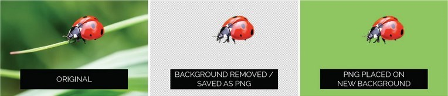

Last week you built a page. This week you build a site: pages that link to each other, lists, better images, some embedded media and an animated banner. Still no CSS. That starts next week, and it will be far easier once the HTML underneath it is solid.
Run sheet
- Links: to other sites, to email and phone, and within a page
- Linking your own pages together (index.html and about-me)
- Images revisited: formats, sizing and a couple more attributes
- Lists
- Break
- Seeing your page the way the browser does: the Elements panel
- Embedding video and audio
- Animated banners in Photoshop (video-led)
- Portfolio Task 2: a page for a small business
Linking your own pages together
Last week you set up a skills-portfolio folder with
an images folder inside it and saved your about-me
page there. Every portfolio task from now on lives in that same
folder, so the pages can link to each other with short
relative paths: href="about-me.html"
means "the file called about-me.html in the same folder as this
page".
Naming conventions, again
No spaces in file or folder names (use a hyphen)
and keep everything lower case. A link to
About Me.html works on your laptop and breaks on a web
server. Marks are lost to this every year.
Exercise 2
- Create a new HTML file and save it in your skills-portfolio folder with the filename index.html
- Put in the template code from week 1, including header, main and footer.
- Add the text "All about me" inside the <body> element.
- Inside main, set up a link to the page you created about yourself.
- Set up a link back from the page all about yourself to "index.html"
- Test they both work okay.
Exercise 3
If your "About me" page is long enough you could try setting up a link at the top of the page to jump down to a section that is lower down the page. This would demonstrate that you know how to create a link to content on the same page.
Images revisited
Last week you met the image element. There's a bit more to it.
Image Types for the Web
There are 4 main different file formats that we tend to use for the web. Which one you pick depends on the type of image. We are always trying to strike a balance between Low file size vs Visible quality.
Most images, especially JPEG, contain a lot more data than is needed for a browser and are too often overly large and slow. You can reduce the size of the image using photo editing software that allows you to re-sample an image to reduce its pixel data and in turn reducing image size. However, once you re-sample an image, do not make change its size (height and width) to make it larger as it will become pixelated and blurry.
JPEG (Joint Photographic Experts Group)
Images compress well and are the standard for photos. But they don't support any sort of animation or transparency.
PNG (Portable Network Graphics)
Images support transparency and alpha channels. This makes them useful for non-rectangular images that may need to overlay different background colours or other elements on the page. To make PNG images, a user would need graphics editing software (like GIMP, Photoshop, or others).

SVG (Scalable Vector Graphics)
Are defined mathematically and support animation. Also, since they are defined mathematically they scale to any size without worrying about pixels, resolution or image data. This makes SVG images an excellent format to use, if possible. SVG is great for logos, charts, graphs, maps, geometric shapes, and line based illustrations. You can export them direct from Illustrator.
GIF (Graphics Interchange Format)
These are limited to 256 colours. One of the colours can be transparent but if you make it so the edges tend to look jagged. GIF's are great for any images with large areas of the same colour (like cartoons or logos). The best thing about GIF's is that you can animate them!
New Image Formats
There are new image formats appearing that compress images even better. Google has been recommending its very own WebP image format and Mozilla has been developing the APNG (PNG images that animate) but so far support in all browsers is not quite there yet.
Some More Attributes
The title Attribute
If you have a complicated image that could use a tooltip or description, you will want to use the title attribute. The alt attribute is meant to be an alternate source of information while the title attribute should provide additional information about the image.
<img src="complex-diagram.jpg" alt="Network diagram" title="Company network infrastructure showing servers, routers, and client connections">width and height
Strictly speaking we should add width and height attributes to our images. The image will display fine without them but sometimes you can use width and height to resize the image in HTML. If you've ever read a web page and suddenly an image loads in above and your text jumps down the screen adding a width and height value will stop this from happening.
Many developers leave off width and height and let CSS control the size of images but for the above reason of avoiding jumps as the page loads it is best to add them in.
An image with these items added and a link to an image in a local folder might look like this:
<img src="images/logo.png" alt="Company logo" title="Our brand" width="200" height="100">Cool Online Tool for Resizing Images
Pixlr is a free online tool for resizing and editing images. It's perfect for preparing images for the web!
Lists
HTML provides us a way of listing things. It does this by providing a range of list elements. There are 3 types: unordered, ordered and definition. Let's look at each of them.
Unordered List
This is probably the most usual of the 3 types of list. We use this when the order of the items is not important. By default a list of this type is displayed in the browser with bullet-points. We can change how these bullets are displayed using the type attribute but later we will see how we can make lists look better using CSS.
The <li> element is short for list item.
<ul>
<li>Milk</li>
<li>Bread</li>
<li>Eggs</li>
<li>Butter</li>
</ul>- Milk
- Bread
- Eggs
- Butter
Ordered List
When order is important we use an ordered list. This is what the <ol> tag stands for.
<ol>
<li>Heat the oven</li>
<li>Mix ingredients</li>
<li>Pour into tin</li>
<li>Bake for 30 minutes</li>
</ol>- Heat the oven
- Mix ingredients
- Pour into tin
- Bake for 30 minutes
Definition List
This is the least used because many people are not sure how to use it. It is quite simple. Choose this list for any items that have 2 parts to them. An example would be a dictionary - a list of words with their associated meaning or a menu - a list of dish names with their descriptions. The <dt> element is the definition term. The <dd> element is the definition description.
<dl>
<dt>Coffee</dt>
<dd>Hot beverage made from roasted beans</dd>
<dt>Tea</dt>
<dd>Hot beverage made from dried leaves</dd>
</dl>- Coffee
- Hot beverage made from roasted beans
- Tea
- Hot beverage made from dried leaves
Exercise 4
Complete the following CodePen by adding some lists to the HTML. Follow the instructions in the comments.
Exercise 4 - Practice with ListsBreak
Halfway
After the break: a tool that will save you hours, a bit of media, and the banner.
Seeing your page the way the browser does
Every browser has a set of developer tools built in. You will use them every single week from now on, so it is worth ten minutes getting comfortable. In Chrome, Edge or Firefox: right-click anything on a page and choose Inspect, or press F12 (Windows) or Cmd+Option+I (Mac).
The Elements panel
The Elements panel shows the HTML the browser actually built from your file. Two things make it invaluable:
- It shows you what the browser thinks you wrote. If you forgot to close a tag, the browser guessed, and the Elements panel shows the guess. When a page "looks wrong", this is where you find out why.
- You can hover an element in the panel and the browser highlights it on the page, so you can see exactly which bit of HTML produces which bit of page.
Try it now
- Right-click this paragraph and choose Inspect.
-
In the Elements panel, find the
<section>this text sits in and click the small triangle to fold and unfold it. - Double-click a word in the panel and change it. The page changes too. Reload the page and it comes back: you edited the browser's copy, not the file.
Next week you'll use the panel next to it, Styles, to see and change CSS live. Between them, and the W3C validator, you have everything you need to fix your own pages.
Animated banners in Photoshop
For this week's portfolio task you will need to create an animated banner. This part is video-led: watch the two videos, then make your own. Photoshop actually has some animation tools built into it that we can use to do this. There is other software that professionals might use to create animated banners but we can do it in Photoshop and this reinforces the learning you are doing in your graphics module. Watch the following videos to see how.
Pt 1 - Simple Animated Banner with Single Frames
In the following 2 videos I have created a banner for a small cafe that we have on campus called "Tiki". The first banner is simple animation - just switching between static frames. The second has movement and fades.
I'd like you to come up with a banner that advertises some aspect of your business. Check out the following articles for how to make good banner ads:
Pt 2 - Smoother Animation Using Tweening
Tweening allows you to create smooth transitions between frames, making your animations look more professional.
Portfolio Task 2: a page for a small business
Create a single web page for a fictional business of your choice. It could be a café, a pet spa, a tech repair shop, an escape room, an online houseplant store, a band, whatever you like. This page is the second piece in your skills portfolio, and you will keep working on it when we start CSS.
Requirements
- File and folder: save it as business.html in your skills-portfolio folder, with its images in the images folder. Lower case, no spaces.
-
Structure: use the landmarks from last week:
header(with the business name and anav),mainandfooter. -
Navigation: a
navcontaining a list of links: back to index.html, to your about-me page, and to sections further down this page. - Lists: at least one unordered list and one ordered list, with content that makes sense for the business (a menu, a list of services, the steps to book, how to make the perfect coffee). A definition list is optional.
-
Images: a logo and two or three photos, resized for
the web, every one with a useful
alt. Make an approximation of the logo yourself in Photoshop rather than lifting one; the emphasis is on your web skills, so don't spend all week on it. - Animated banner: a GIF banner made in Photoshop, following the videos above, advertising a product or service. Eye catching, with a clear call to action.
- Embedded media: at least one thing from the embedding section: a YouTube video, a map of where the business is, or a hosted video or audio clip.
- Links home: link to this page from index.html, and add a link at the bottom of the page back to the top.
- Validate it. Paste the code into the W3C validator and fix what it finds before you call it done.